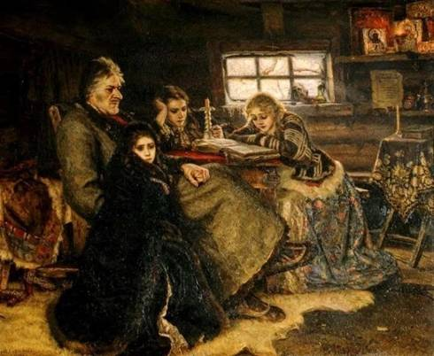

III.1. Учебная дисциплина «ОСНОВЫ ЭКСКУРСОВЕДЕНИЯ»
С 2009 года кафедра общей географии, краеведения и туризма работает по модернизированной программе дисциплины «Экскурсоведение», о которой рассказано в разделе I.3. «О модернизации цели при преподавании экскурсионного дела в вузах России сегодня».
Согласно программе, каждый студент должен подготовить на 3 курсе в 5 семестре три экскурсионных рассказа на занятиях по учебной дисциплине «Основы экскурсоведения» (продолжительность рассказов - 6 – 8 мин):
- экскурсионный рассказ по произведению изобразительного искусства;
- экскурсионный рассказ об одном из объектов Всемирного наследия ЮНЕСКО в России;
- рассказ об отеле или туристско-оздоровительном районе и отеле (по выбору студента) с демонстрацией фотографий, карто-схем и др.
Все рассказы после выступления студента тщательно анализируется учебной группой. Рассматривается следующее:
1) тема экскурсии, 2) цель экскурсии, 3) показ, особенности показа в анализируемой экскурсии 4) композиция рассказа, 5)единство показа и рассказа, 6) «портфель экскурсовода», 7) содержание рассказа, 8) контакт экскурсовода с группой, 8) речь экскурсовода, 9) эмоциональность, 10) жесты и мимика, 11) даются советы студенту.
ПЕРВЫЙ РАССКАЗ
3 курс 5 семестр
Этапы подготовки и образцы документов
к экскурсионному рассказу по картине
1) Выбор картины
2) Определение цели рассказа
3) Определение объектов показа
4) Разработка словесного показа
5) Подготовка рассказов по объектам показа
6) Подготовка иллюстраций «портфеля экскурсовода»
7) Составление технологической карты экскурсии
8) Рассказ на занятиях

В.И. Суриков «Меншиков в Березове». 1883 г.
ТЕХНОЛОГИЧЕСКАЯ КАРТА ЭКСКУРСИИ
Цель экскурсии: познакомить экскурсантов с успехами и падением А.Д. Меншикова; выявить причины ошибок, совершенных им
| Объект показа | Показ | Основное содержание информации |
| Изба, в которой жили в Березове Меншиковы | Окно, закрытое слюдой. Всего 3 иконы. Стол из плохо обтесанных досок. Слева деревенского вида кровать. Постоянный полумрак. | Семья Меншиковых в 1727 г. была отправлена в ссылку в Березове. А.Д. Меншиков вместе с несколькими верными слугами построили избу. |
| А.Д. Меншиков | В левой части картины обращает на себя внимание фигура мощного, сильного человека, находящегося в глубоком раздумье. Тяжелый подбородок выдает в нем сильную личность. Рука, привыкшая управлять. И кажется, что слышишь стон, вырывающийся из груди. Это Александр Данилович Меншиков. | А.Д. Меншиков - сподвижник Петра I из числа «птенцов гнезда Петрова» Его путь: от «пирожника» до светлейшего князя. Первый олигарх России. Его имущество: 90 тыс. крепостных, 6 городов, 99 сел, 13 млн руб. и другое. Обвенчал дочь Марию с императором Петром II. |
| А.Д. Меншиков | Портрет А.Д. Меншикова из «портфеля экскурсовода» | |
| Мария Меншикова | В центре картины, на переднем плане, закутавшись в темную шубку, с грустными глазами, прижавшись к креслу отца, сидит старшая дочь –Мария. | Мария была обручена с императором Петром II. Умерла в ссылке в Березове. |
| Мария Меншикова. 1723 . | Портрет Марии из «портфеля экскурсовода» | |
| Александра Меншикова | За столом читает, скорее всего, «Евангелие» красивая светловолосая девушка в нарядной юбке, контрастирующей с убогой обстановкой холодной избы. Это младшая дочь – Александра Меншикова | Александра слыла при дворе красавицей. В ссылке в Березове пробыла до 1731 г. Была определена в камер фрейлены. В 1732 г. отдана замуж за брата Бирона. Умерла при родах в 1736 г. |
| Александра Меншикова. 1723. | Портрет Александры из «портфеля экскурсовода» | |
| Александр Меншиков | Вторым сидит за столом, облокотившись о правую руку, безо всяких переживаний на лице красивый юноша – сын Александра Даниловича Александр. | Вместе с семьей до 1731 г. находился в ссылке в Березове. Ему сохранили титул и вернули пятидесятую долю имущества, принадлежавшего семье Меншиковых. |
Список произведений выдающихся художников,
рекомендуемых для экскурсионных рассказов
Василий Иванович СУРИКОВ (1848 – 1916)
1. Утро стрелецкой казни. 1881 г.
2. Боярыня Морозова. 1887 г.
3. Меншиков в Березове. 1883 г.
4. Покорение Сибири Ермаком. 1895 г.
5. Переход Суворова через Альпы. 1899 г.
Василий Васильевич ВЕРЕЩАГИН (1842 – погиб 1904)
6. Апофеоз войны. 1871 г
Илья Ефимович РЕПИН (1844 – 1930 )
7. Иван Грозный и его сын Иван. 1885 г.
Николай Николаевич Ге (1831 – 1894)
8. Петр 1 допрашивает царевича
Алексея Петровича в Петергофе.1871 г.
Карл Павлович Брюллов (1799 – 1852)
9. Последний день Помпеи. 1830 – 1833 гг.
Леонардо да Винчи (1452 – 1519 ). Италия
10. «Тайная вечеря»
Микельаджело Буонарроти (1475 – 1564). Италия
11. «Страшный суд»
Эль Греко (наст. фам. Теотокопули) Доменико (1541 – 1614).Испания
12. «Вид Толедо»
Дали Сальвадор (1904 – 1989). Испания
13. «Пылающий жираф»
Пикассо Пабло (1881 – 1973). Франция
14. «Герника»
Роден Огюст (1840 – 1917). Франция
15. «Мыслитель», «Вечный идол»
Уорхол Энди (1931 - 1987). США - Лидер поп-арта
ВТОРОЙ РАССКАЗ
3 курс 5 семестр
Для второго экскурсионного рассказа студенты используют
объекты Всемирного наследия ЮНЕСКО в России, а также другие объекты на территории Российской Федерации: Вознесенский собор в Новочеркасске,
Воскресенский собор в станице Старочеркасской (Ростовская обл.), музей-заповедник А.П. Чехова в Таганроге, музей-заповедник М.А. Шолохова в станице Вешенской (Ростовская обл.), Домбай (Западный Кавказ), Приэльбрусье (Центральный Кавказ) и др.
Продолжительность рассказа – 6 – 8 мин.
После рассказа проводится его обсуждение по схеме первого рассказа.
Объекты Всемирного наследия
ЮНЕСКО в России
В списке объектов Всемирного наследия ЮНЕСКО на 2010 г. значится в России 24 объекта - 15 культурных, 9 природных.
Всего в полном списке Всемирного наследия на 2010 г. числится 911 объектов, то есть доля объектов России в мире – 2,6%.
| # | Название | Местоположение | Время создания |
| 1 | Исторический центр Санкт-Петербурга и связанные с ним комплексы памятников | Санкт-Петербург | XVIII-XX вв. |
| 2 | Архитектурный ансамбль Кижского погоста | Республика Карелия | XVIII—XIX вв. |
| 3 | Московский Кремль и Красная площадь | Москва | XIII—XVII вв. |
| 4 | Исторические памятники Новгорода и окрестностей | Новгородская область | XI-XVII вв. |
| 5 | Культурный и исторический ансамбль «Соловецкие острова» | Архангельская область | XVI-XVII вв. |
| 6 | Белокаменные памятники Владимира и Суздаля | Владимирская область | XII—XIII вв. |
| 7 | Церковь Вознесения в Коломенском | Москва | XVI вв. |
| 8 | Архитектурный ансамбль Троице-Сергиевой лавры | Московская область | XV-XVIII вв. |
| 9 | Девственные леса Коми | Республика Коми | — |
| 10 | Озеро Байкал | Иркутская область, Республика Бурятия | — |
| 11 | Вулканы Камчатки | Камчатский край | — |
| 12 | Центральный Сихотэ-Алинь | Приморский край | — |
| 13 | Золотые Алтайские горы | Республика Алтай | — |
| 14 | Убсунурская котловина | Республика Тыва (совместно с Монголией) | — |
| 15 | Западный Кавказ | Краснодарский край, Адыгея | — |
| 16 | Историческо-архитектурный комплекс «Казанский кремль» | Республика Татарстан | XVI—XXI вв. |
| 17 | Ансамбль Ферапонтова монастыря | Вологодская область | XV-XVII вв. |
| 18 | Куршская коса | Калининградская область (совместно с Литвой) | — |
| 19 | Цитадель, старый город и крепостные сооружения Дербента | Дагестан | VI-XIX вв. |
| 20 | Остров Врангеля | Чукотский автономный округ | — |
| 21 | Ансамбль Новодевичьего монастыря | Москва | XVI-XVII вв. |
| 22 | Исторический центр Ярославля | Ярославская область | XVI-XX вв. |
| 23 | Геодезическая дуга Струве | Ленинградская область | XIX в. |
| 24 | Плато Путорана | Красноярский край | — |
Архитектурные, историко-культурные и природные памятники России, включенные в список Всемирного культурного и природного наследия ЮНЕСКО, являются основными каркасообразующими элементами (элементами первого порядка), формирующими маршруты туристов из-за рубежа, а также российские потоки путешественников.
ТРЕТИЙ РАССКАЗ
3 курс 5 семестр
Третий рассказ из числа рассказов по дисциплине «Основы экскурсоведения» базируется на материалах туристских каталогов, туристских карто-схем, различных путеводителей и буклетов.
Студент должен рассказать о местоположении отеля в городской среде, показать на карто-схеме маршруты к основным местам отдыха и лечения, к основным магазинам, театрам, учреждениям развлечения и др.
Если для первой части рассказа используется туристско-картографический материал, то для второй, в которой информируется об отелях (номерах, обстановки в них, холлах, барах, ресторанах и др.) – нужен материал фотографический.
Рассказ строится по тем же закономерностям, что и экскурсия, главные из них - первичность показа, единство показа и рассказа.
Продолжительность рассказа – 6-8 мин.